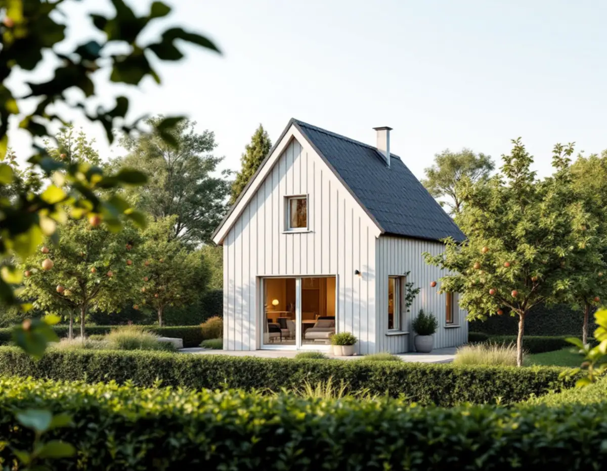

Tomt och plan
Vi mäter upp tomten och läser detaljplanen och klassificeringskartan.
Ett litet hus i trädgården kan ge plats åt en vuxen son eller dotter, en förälder eller en hyresgäst i Bromma. Geal Entreprenad AB bygger komplementbostadshus nyckelfärdigt och går igenom detaljplanen, Stadsmuseets karta och anmälan för vatten och avlopp innan något beställs.

Stadens vägledning för småhusområden konstaterar att nästan varje tomt i trädgårdsstäderna har en detaljplan. För ett attefallshus i Bromma är det därför plan- och bygglagens regler för detaljplanelagt område som gäller: huset får ha högst 30,0 kvadratmeter byggnadsarea och 4,0 meter taknockshöjd, och alla lovfria komplementbyggnader på tomten får tillsammans uppta högst 45,0 kvadratmeter. En friggebod eller ett förråd som redan står där tar alltså en del av utrymmet. Samma vägledning skriver att Stockholms trädgårdsstadsmiljöer och områden av riksintresse inte omfattas av bygglovsbefrielsen, så i trädgårdsstaden kan huset i stället kräva bygglov.
Stockholms stad skriver att ett komplementbostadshus som inte kräver lov får strida mot detaljplanen och därför kan stå på prickmark. Planen kan ändå innehålla egna bestämmelser om skydd eller krav på lov, så vi läser den i stadens Bygg- och plantjänsten innan vi ritar. Vägledningen pekar också ut vad som påverkar ett villaområde mest när det förtätas: volymen på komplementbyggnader, den gröna karaktären med träd och häckar och hur byggnader förhåller sig till gatan. Vår bedömning är att ett litet hus längre in på tomten, bakom huvudbyggnaden, stör minst.
Region Stockholms sammanställning av riksintressen för kulturmiljövården listar Ålstensgatan och Södra Ängby som ett gemensamt riksintresse (AB 643), och stadens vägledning beskriver Södra Ängby som ett av Europas största sammanhängande områden med modernistiska villor från 1930-talet. Stockholms stad skriver i dag att bygglov krävs om tomten ligger inom ett riksintresse för kulturmiljövården eller i ett område som översiktsplanen pekar ut som särskilt kulturhistoriskt värdefullt. Enligt 9 kap. 37 § krävs bygglov för nybyggnad i särskilt värdefulla områden, och det gäller även ett komplementbostadshus.
Stadsmuseets klassificeringskarta ger den första indikationen. En blå ring markerar riksintresse och en grön ring områden som översiktsplanen pekar ut som särskilt kulturhistoriskt värdefulla. Byggnader i blått eller grönt kräver lov, gult och grått gör det inte om inget annat gäller. Streckade ytor är ännu inte inventerade. Där mejlar du Stadsmuseet adress, fastighetsbeteckning, stadsdel, byggår, tidigare ombyggnader och foton, och museet brukar svara inom tre veckor efter att allt har kommit in.
På en tomt i trädgårdsstaden räcker 4,5 meter till gränsen ofta inte långt. Närmare än så krävs ett skriftligt medgivande från de berörda grannarna, annars bygglov. Staden räknar upp vad medgivandet ska innehålla: fastighetsbeteckning, vilken åtgärd det gäller, en situationsplan med avståndet till gränsen och grannarnas underskrifter. Staden skriver att du bör kunna visa upp det för byggnadsnämnden vid tillsyn, så spara det.
Gränsar tomten mot en gata eller en park är kommunen oftast huvudman för den allmänna platsen, och då är det kommunens medgivande som räknas enligt 9 kap. 35 §. I Stockholm skickar du den förfrågan till stadsbyggnadskontoret. Vill du hellre bygga ihop ytan med villan finns tillbyggnad i Bromma, och alla mått och paragrafer står i nya regler för attefallshus.
Själva huset kräver ingen anmälan, men installationerna gör det. Stockholms stad skriver att en ny installation för vatten eller avlopp ska anmälas till byggnadsnämnden och att arbetet inte får börja före startbesked. Beslutet ska komma inom fyra veckor från att anmälan är komplett. Ska huset kopplas till stadens ledningsnät görs dessutom en egen anmälan till Stockholm Vatten och Avfall. Ventilation och eldstad anmäls till byggnadsnämnden på samma sätt.
När arbetet är klart och kraven visade får du slutbesked, och först då får huset tas i bruk. Vi planerar därför ledningsdragningen tidigt, eftersom avståndet till villans befintliga ledningar och höjdskillnaden på tomten påverkar både schaktet och var huset kan stå.
Vi mäter upp tomten och läser detaljplanen och klassificeringskartan.
Avstånd till gräns, gata och träd ritas in på en situationsplan.
Vid behov tar du fram grannarnas och kommunens skriftliga medgivanden.
VA, ventilation och eldstad anmäls och vi väntar på startbesked.
Grund, stomme, tak, installationer och ytskikt – nyckelfärdigt.
Huset tas i bruk när slutbeskedet har kommit.
Skatteverket räknar upp vad som inte ger rotavdrag på ett småhus, och där står att bygga ett helt nytt hus, en friggebod, ett garage, ett växthus eller en liknande fristående byggnad. Ett komplementbostadshus är en ny fristående byggnad och därmed nybyggnad. Vårt kostnadsförslag för huset visar därför hela beloppet utan avdrag.
Husets storlek och planlösning, om det får kök och badrum, grundläggningen på tomten, hur långt ledningarna måste dras och hur material kan köras fram mellan villa och staket. Efter ett kostnadsfritt platsbesök får du ett skriftligt kostnadsförslag.
Komplementbostadshus på tomten.
Attefallshus →Takbyte, takbesiktning och plåtarbeten.
Takläggare i Bromma →Trädgårdsstäder, tegel och funkistak.
Takrenovering i Bromma →Trävillor, småstugor och funkisvillor.
Badrumsrenovering i Bromma →Vind, bärande väggar och en andra bostad.
Byggföretag i Bromma →Kulörval och färgtyp i trädgårdsstaden.
Fasadmålning i Bromma →Trädgårdsstäder, småstugor och funkis i Bromma.
Fasadrenovering i Bromma →Småspröjs, småstugor och funkis i Bromma.
Fönsterbyte i Bromma →Småstugornas fönster, kitt och linoljefärg.
Fönsterrenovering i Bromma →Villor i trädgårdsstäderna och lägenheter i smalhus.
Golvläggare i Bromma →Slipa furugolvet och behandla med lut och såpa.
Golvslipning i Bromma →Imkanal, småstugor och trävillor.
Köksrenovering i Bromma →Fasad och interiör i Brommas villastäder.
Målare i Bromma →Kupor, låga tak och bleck i Bromma.
Plåtslagare i Bromma →Verandor, entréer och altaner.
Snickare i Bromma →Lertegel, småstugor och solceller i Bromma.
Takbyte i Bromma →Spara och ersätta gamla tapeter.
Tapetsering i Bromma →Småstugor, trädgårdsstad och prickmark.
Tillbyggnad i Bromma →Hela villan i rätt ordning.
Totalrenovering i Bromma →